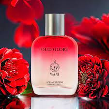

.jpeg)
Perfumes are a captivating blend of art and science, designed to evoke emotions and memories through scent.
.jpeg)
Perfumes are a captivating blend of art and science, designed to evoke emotions and memories through scent.

Perfumes are a captivating blend of art and science, designed to evoke emotions and memories through scent.
About Us
Perfumes are a captivating blend of art and science, designed to evoke emotions and memories through scent. Composed of essential oils, aroma compounds, and solvents, perfumes can range from fresh and floral to warm and woody. The creation of a fragrance involves careful balancing of top, middle, and base notes, which unfold over time to create a multi-layered olfactory experience.Throughout history, perfumes have held significant cultural importance, used in rituals, personal adornment, and even as status symbols. Ancient civilizations, like the Egyptians and Greeks, crafted fragrant oils from natural ingredients, believing in their power to please the gods and enhance beauty.Today, the perfume industry thrives with countless brands and unique compositions, offering something for everyone. Niche perfumeries and artisan creators have emerged alongside mainstream labels, emphasizing individuality and storytelling through scent.Choosing a perfume is a personal journey, reflecting one’s personality and mood. Whether it’s a signature scent or a special occasion fragrance, the right perfume can leave a lasting impression, encapsulating moments and feelings in a bottle. As we navigate the world of fragrances, we discover not just scents but also the memories and emotions they inspire.